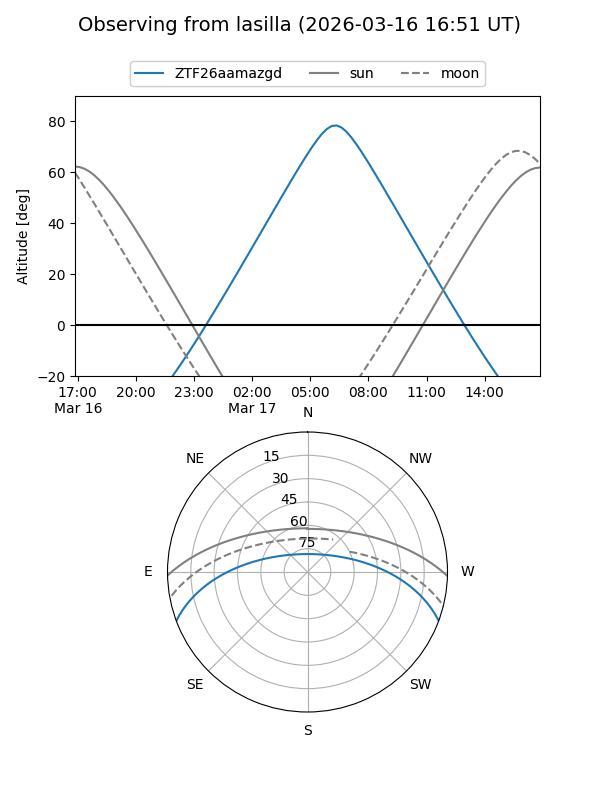
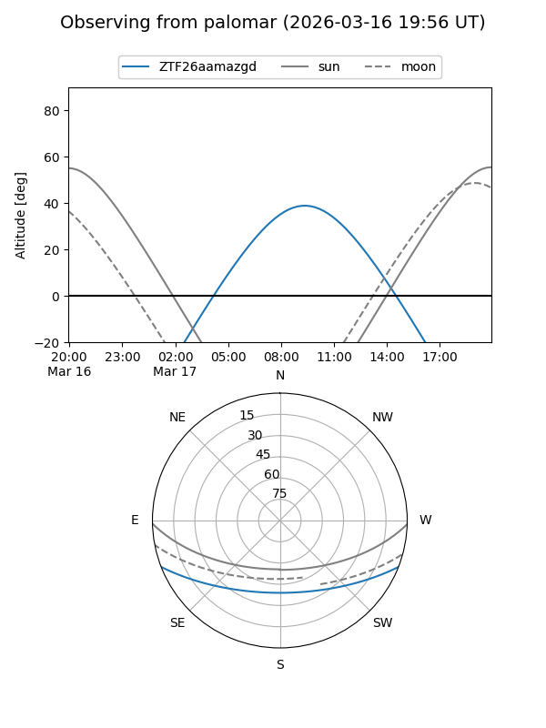

ZTF26aamazgd
Target ZTF26aamazgd at 2026-03-16 13:05
Aliases and brokers:
FINK: link
Lasair: link
ALeRCE: link
alt names
ZTF26aamazgd (ztf,fink_ztf)
Coordinates:
equatorial (ra, dec) = 198.0210,-17.58079
equatorial (HMS+DMS) = 13:12:05.03,-17:34:50.85
galactic (l, b) = (309.8996,+45.01146)
Flags:
Photometry:
last ztfg=16.40
1 ztfg detections
Lightcurve
Visibility


Additional plots